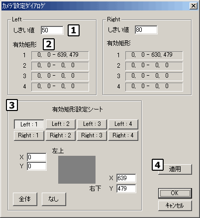
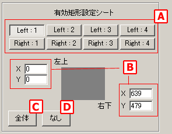
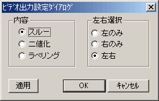
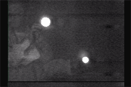
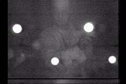
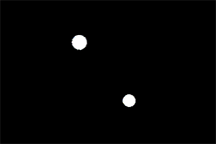
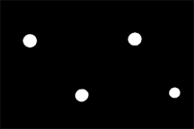
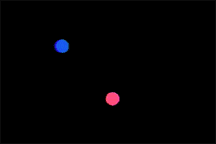
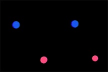

| ダイアログ （カメラ設定関連） |
|
|
カメラ設定ダイアログ
|
|

ステレオラベリングカメラに対する設定を行います。
左カメラと右カメラに別々に設定します。
ステレオラベリングカメラがマーカを抽出する際の明るさの「しきい値」を設定します。
設定した値よりも輝度の高いエリアのみを抽出し、マーカとして認識します。０〜２５５の値を設定可能です。「適用」ボタンを押すと設定が有効になりますので、２Ｄイメージダイアログまたはビデオ出力画面を見ながら左右の撮影状況が同じになるように設定してください。
マーカを抽出するエリアを設定する矩形の左上と右下の座標値を表示します。
- ４つの矩形を組み合わせて有効エリアとします。
- １〜４の矩形設定のＯＲ（論理和）が有効なエリアとなります。
- それぞれの矩形の座標値入力は有効矩形設定シートで行います。
それぞれの矩形の座標値設定を行います。
座標値は左上端が（0,0）、右下端が（639,479）です。

Ａ 矩形選択
設定を行う矩形を選択します。Ｂには選択した矩形の設定内容が反映されます。 Ｂ 座標値入力 座標値を入力します。Ｘは０〜６３９、Ｙは０〜４７９の範囲で入力可能です。 Ｃ 全体選択 選択中の矩形が全画面有効（左上 = 0,639 、右下 = 0,479）になるように座標値を自動変更します。 Ｄ 全体非選択 選択中の矩形が全画面無効（左上 = 0,0 、右下 = 0,0）になるように座標値を自動変更します。
現在設定している内容をステレオラベリングカメラに送ります。
２Ｄイメージダイアログまたはビデオ出力画面を見ながら設定内容を確認してください。
|
ビデオ出力設定ダイアログ
|
|

ステレオラベリングカメラのビデオ出力端子をテレビモニター等に接続して、実際にカメラが処理している映像を確認することができます。このダイアログではその映像の内容を変更することができます。
「適用」ボタンを押すと、現在の設定をステレオラベリングカメラに転送されて、ビデオ出力映像が変更されます。
「内容」および「左右選択」の設定とビデオ出力映像は下表のように対応します。
内容 ： スルー
画像処理をしていない映像
  内容 ： 二値化
しきい値により二値化した映像
  内容 ： ラベリング
しきい値によりラベリングしエリアを識別した映像
※色は３Ｄモニターの表示と対応していません。 
|
|
Copyright (C) 2001 CyVerse
Corp.
|